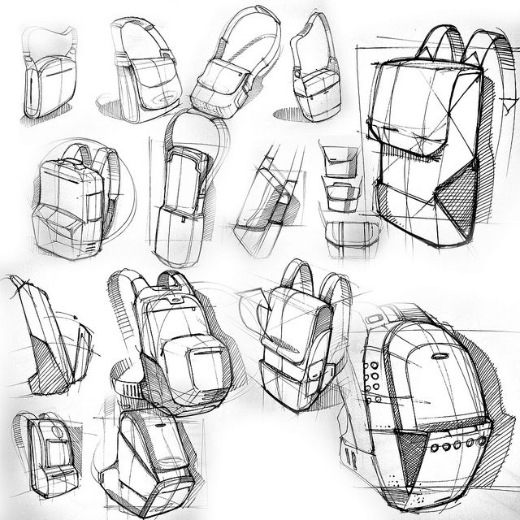

Converse Suburban
Spherical shades designed with industry standard methods for optics and with accurate anatomical measurements.
My task was to analyze the brand's form language and create a product not already in the their arsenal, using southern suburban U.S as a contrasting theme to Converse's expression.
Swipe Model to Rotate

